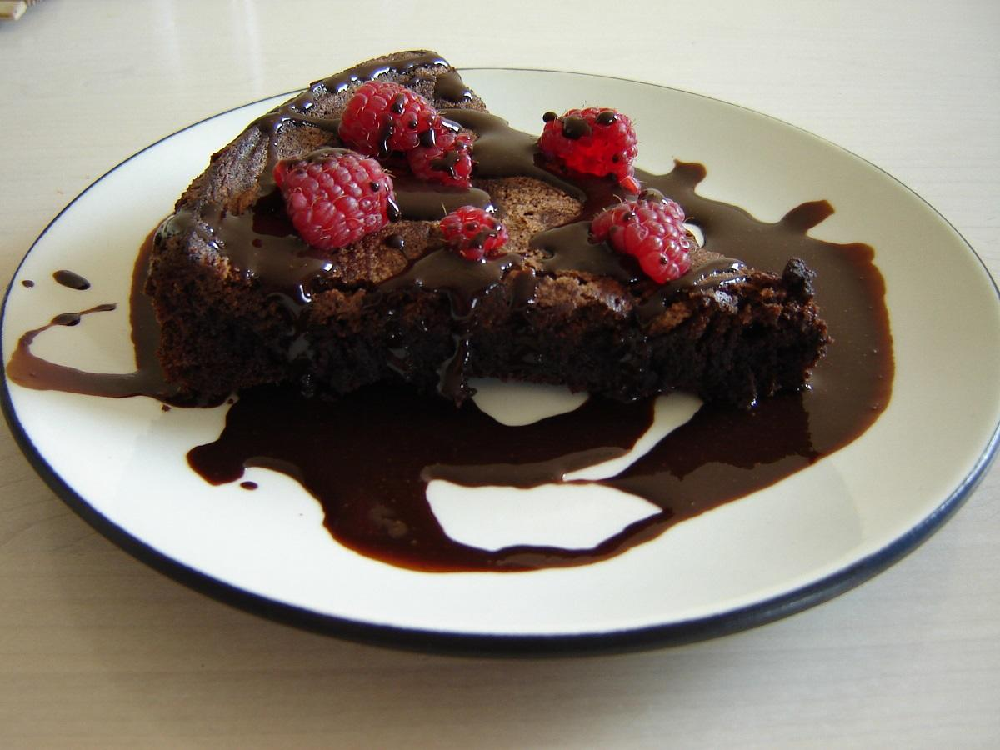
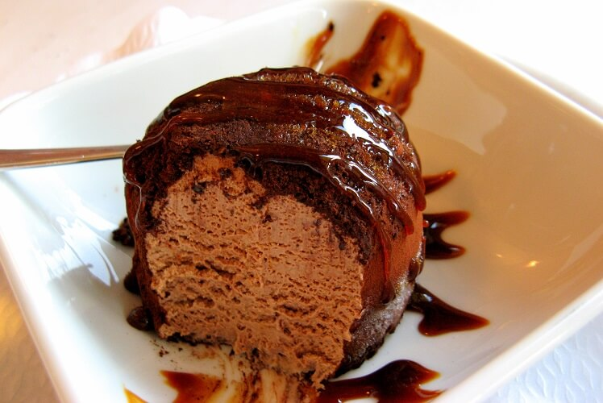
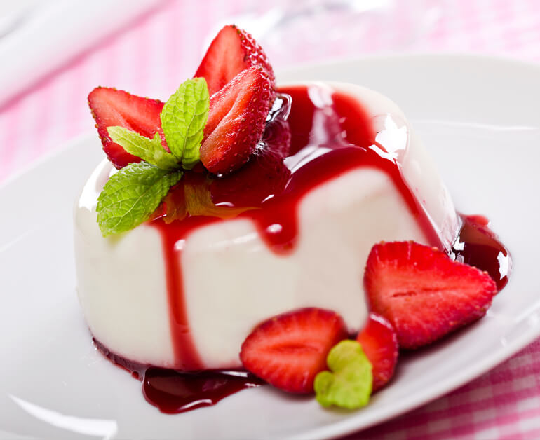

Black Forest

Black Forest cake is a chocolate sponge cake with a rich cherry filling based on the German dessert Schwarzwälder Kirschtorte, literally "Black Forest Cherry-torte"
Dessert
a pastry comprising layers of filo with chopped nuts, sweetened and held together with syrup or honey
Sachertorte

The cake consists of a dense chocolate cake with a thin layer of apricot jam on top, coated in dark chocolate icing on the top and sides. It is traditionally served with unsweetened whipped cream.
Tiramisu
Traditional tiramisu contains a short list of ingredients: finger biscuits, egg yolks, sugar, coffee, mascarpone cheese and cocoa powder. In the original recipe there is no liquor or egg whites.
Panna Cotta
Sugar is dissolved in warm cream. The cream may be flavored, either by infusing spices and the like in it, or by adding rum, coffee, vanilla, and so on.
Tartufo di Pizzo

It is usually composed of two or more flavors of ice cream, often with either fruit syrup or frozen fruit — typically raspberry, strawberry, or cherry — in the center.